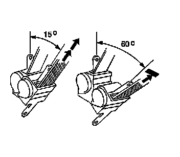

Component Tests and General Diagnostics
EMERGENCY LOCKING RETRACTORS
CAUTION: Perform this test in an area clear of other vehicles or obstructions. Do not conduct this test on the open road. A large, empty parking lot is suitable. Failure to observe this precaution may result in damage to the vehicle and possible personal injury.
1. Fasten the seat belts, an assistant is needed when the retractor under test is not part of the driver seat belt.
2. Accelerate the vehicle slowly to 16 km/h (10 mph) and apply the brakes firmly.
3. Verify that the seat belt locks when braking firmly.
4. If the belt does not lock, proceed with the following steps.
1. Remove the seat belt retractor assembly.
2. Tilt the seat belt retractor slowly.

3. Ensure that the seat belt webbing can be pulled from the retractor at an inclination of 15 degrees or less and cannot be pulled from the retractor at an inclination of 60 degrees or more.
4. If the seat belt retractor does not operate as described, replace the retractor assembly.